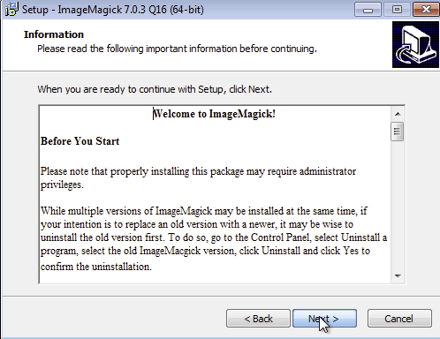
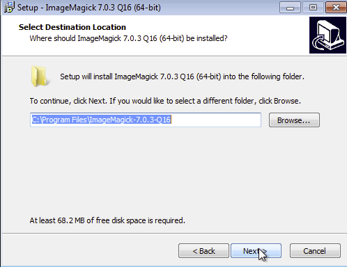
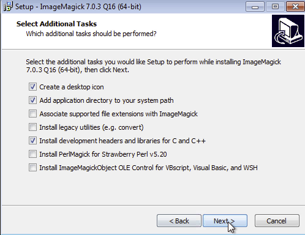
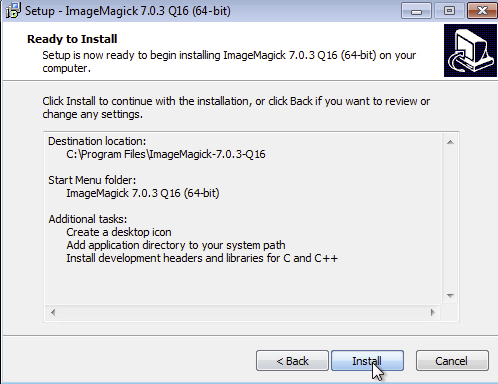
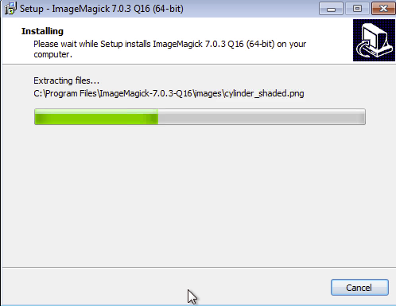
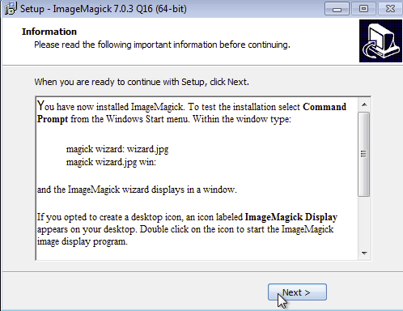
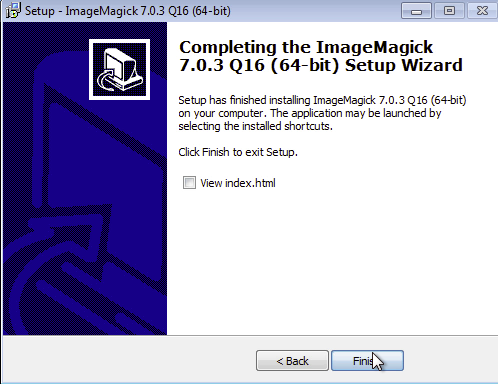

Ruby white space strip command line application
This program uses Ruby Power to strip whitespace from files, and the accompanying documentation provided aims at being an easy to follow tutorial on all things Ruby. All the links in this README.md briefly explain some of the Ruby topics discussed.
Wait until this webpage fully loads and if you want to jump ahead, choose your topic below:
- OS X
- OS X installation requirements
- RVM
- Homebrew
- Windows
- Resources used on this project and helpful links
- List of Ruby
- Contributions
Matz made Ruby fun to learn so come and check out the Ruby in 4 seconds video.
For those of you who don't know much about Ruby...
Here's Ruby Power in five seconds from Ruby Wikipedia
Ruby was accepted as a Japanese Industrial Standard (JIS X 3017) in 2011[25] and an international standard (ISO/IEC 30170) in 2012.
Ruby is growing in popularity and is currently ranked 13th on the TIOBE Index.
This program runs on the command line and accepts a single parameter, a folder path name.
It checks this folder recursively through all sub folders and files for leading and trailing whitespace.
It removes all the excess leading and trailing whitespace and copies the folder contents to this projects 'output' directory.
So far it has been checked against these file formats:
- *.c
- *.xml
- *.xsl
- *.txt
- *.php
- *.html
- *.py
- *.css
- *.rb
Coming from a PHP background where leading and trailing white space can sometimes be problematic I thought it would be interesting to build a command line tool in Ruby (my first command line tool in Ruby)
To run simply clone this repo and then open a terminal and navigate to the directory where you cloned to.
Then simply run: ruby ruby_strip.rb path/to/folder
This should copy the folder to the 'output' directory. There are currently two test folders for input and output.
The two commands that were run to produce the sample output were:
ruby ruby_strip.rb php-test-files
ruby ruby_strip.rb random-test-files
If you are still to afraid to dive in and try Ruby, how about some easy free web based interactive courses on basic tech:
And then come train in the REAL DOJO and reach your highest potential, become faster, stronger and more powerful......JEDI MASTER LEVEL.....!??!?!!
So now that you are Ruby Gung-Ho, the new Ruby Bruce Lee on the street, try the instructions below.
OS X instructions
Matz made Ruby easy to learn, so don't be worried and first check out a short Ruby YouTube video I created.
Most Macs have Ruby preinstalled so lets see if its installed on your machine, open a terminal and type:
ruby -v

To find out more about Ruby type:
ruby --help

man pages contain a lot of information about programs.
man ruby

You can use the up and down arrows to navigate through the man page or press q to exit.
Ruby also ships with 'ri' a tool used to display information about Ruby Classes, modules and methods from your terminal
A lot of people don't know 'ri' exists and use google search instead.
man ri

Ruby also ships with a fantastic tool called IRB. IRB is the interactive Ruby console where you can test out your Ruby commands inside a terminal. Watch a short video on Youtube that I made on IRB.
man irb

And to use IRB type:
irb

You type 'exit' to stop using irb and return to the standard terminal.
You can add 'tab' completion to irb by creating a .irbrc file
You can use the nano editor to create this by entering:
nano .irbrc
Then entering the next line:
require 'irb/completion'
OS X installation requirements
- Homebrew
- Imagemagick
- Bundler - not a fixed requirement
- fileutils, rubocop gems
I used Homebrew to install imagemagick. Homebrew is the missing package manager for OS X. It installs the stuff you need that Apple didn't. There is a short Homebrew usage section towards the bottom of this README.
Under the hood Homebrew and Homebrew formula are all Ruby. For example with Homebrew I installed Wine and then was able to get Notepad++ running on OS X....
The command to install imagemagick with Homebrew would be:
brew install imagemagick

The code uses two RubyGems, fileutils and rubocop so you must install them, if not already installed.
The 'fileutils' gem requires the rmagick gem to be installed which requries imagemagick to be installed.

You can either install Bundler which will install the required gems from the Gemfile or install the required gems manually.
Using bundler run:
gem install bundler
I've added a Gemfile so you can use bundler from this projects directory to run:
bundle install
which will install the required gems.
Alternatively if not using bundler open a terminal and type:
gem install rubocop
and
gem install fileutils
Gem commands
To see the current Gems that are installed on your system type:
gem list --local

Another way to see the installed gems is to type:
gem server

This will bring up a locally served web page at http://localhost:8808/ listing information about all the gems.

Type:
gem -h
for more information on the gem command.

Another important gem command is:
gem help commands

which leads us to:
gem update

Depending on number of gems installed, your gem update maybe shorter and I have not displayed the full output from the command.
RVM Usage
RVM is the Ruby Version Manager and it's developed mainly by Michael Papis on GitHub at https://github.com/rvm/rvm.
RVM is a command line tool which allows you to easily install, manage and work with multiple ruby environments or multiple ruby versions so that you can mirror the servers environment.
To find out more about RVM open a terminal and type:
man rvm

Also you should enter the following command:
rvm version

You will also want to keep rvm update to date so run:
rvm get stable

rvm list known

ruby -v
This will print the current default system installed ruby version.
To install a new Ruby inside rvm, type:
rvm install ruby-2.2.1

Entering the next command will show which Rubies are installed inside RVM
rvm list

Followed by:
ruby -v

You can see the the RVM installed Ruby is now the system default.
If you would like to switch back to the original system installed Ruby type:
rvm use system
ruby -v

To switch back to using an RVM Ruby type:
rvm use ruby-2.2.1
ruby -v

You can also enter:
which ruby

You can read more about the which command by entering:
man which

Homebrew usage
Homebrew is an amazing package management system that installs the stuff you need that Apple didn't.
Homebrew Formula are written in Ruby.
A made a video on Homebrew which runs for under minute that shows the typical brew update command.
If you install Homebrew you should try to run brew update daily.
Once you have installed Homebrew you can run through the basic commands below.
Open a terminal and type:
man brew

Before using Homebrew you should ensure it's up to date. Run the next command:
brew doctor

brew update

brew list

Windows instructions
To run this program on Windows you will need to install the following software in this order:
- RubyInstaller
- Ruby DevKit
- Imagemagick
- Bundler - optional
- fileutils and rubocop gems
You can use the RubyInstaller for Windows - http://rubyinstaller.org/ to install Ruby.
Before using the RubyInstaller you should check the integrity of the RubyInstaller against its hash on https://bintray.com/oneclick/rubyinstaller/rubyinstaller
To do this on windows you can use the builtin Windows CertUtil command.
After you have installed Ruby try out the next two commands:
ruby -v

ruby -h

Interactive Ruby Shell or IRB should also be installed as seen below
irb

Next you will have to install the Ruby DevKit and then Imagemagick followed by the fileutils RubyGem.
You can download Imagemagick at http://www.imagemagick.org/script/index.php and if you like you can watch the ImageMagick Windows installation video on Youtube.
When you are installing Imagemagick on the - Select Additional Tasks page of the installer, check the box for Install development headers and libraries for C and C++.
The following images show the steps in the ImageMagick Windows installation.









Next you will need to install the "fileutils" gem
Since this project has a Gemfile, the easiest way to install the projects requirements is to run:
bundle install
Otherwise you can install the gems manually by:
gem install fileutils
gem install rubocop
Additional gem commands
To see the current Gems that are installed on your system type:
gem list

gem dependency fileutils

To bring up more information on the gem command type:
gem -h

Resources used on this project and helpful links
Ruby Programming Language - https://www.ruby-lang.org/en/
Ruby Doc - http://ruby-doc.org-doc.org
Ruby the ISO - http://www.iso.org/iso/iso_catalogue/catalogue_tc/catalogue_detail.htm?csnumber=59579
The Ruby Toolbox - https://www.ruby-toolbox.com/
RubyInstaller for Windows - http://rubyinstaller.org/
Homebrew — The missing package manager for OS X - http://brew.sh/
Homebrew formula - http://brewformulas.org
JetBrains RubyMine - https://www.jetbrains.com/ruby/
Ruby Version Manager (RVM) - https://rvm.io/
Ruby regular expression editor - http://rubular.com/
Installing Ruby - https://www.ruby-lang.org/en/documentation/installation/
Ruby success stories - https://www.ruby-lang.org/en/documentation/success-stories/
Ruby Motion success stories - http://www.rubymotion.com/references/success-stories/
The Top Ruby Jobs - https://toprubyjobs.com/
Australian companies using Rails - https://github.com/rails-oceania/roro/wiki/Australian-Companies-using-Ruby-on-Rails
Codecademy - Learn the Command Line - https://www.codecademy.com/courses/learn-the-command-line
Codecademy - Learn Ruby - https://www.codecademy.com/learn/ruby
CodeSchool - Got 15 minutes and want to learn Git? https://try.github.io/levels/1/challenges/1
CodeSchool Try Ruby - https://www.codeschool.com/courses/try-ruby
IDE - Integrated Development Environment - https://en.wikipedia.org/wiki/Integrated_development_environment
Git (software) - https://en.wikipedia.org/wiki/Git_(software)
man page - https://en.wikipedia.org/wiki/Man_page
Terminal (OS X) - https://en.wikipedia.org/wiki/Terminal_(OS_X)
Essential programmer training - http://www.codewars.com/
Mastering Markdown - https://guides.github.com/features/mastering-markdown/
ImageMagick - http://www.imagemagick.org/script/index.php
Wine - https://www.winehq.org
PHP - http://php.net
One-Click rubyinstaller and DevKit - https://bintray.com/oneclick/rubyinstaller
MinGW - Minimalist GNU for Windows - http://www.mingw.org/
Bundler RubyGem - http://bundler.io/
fileutils RubyGem - https://rubygems.org/gems/fileutils/
RuboCop RubyGem - https://github.com/bbatsov/rubocop
List of Ruby
https://twitter.com/matz_translated
https://twitter.com/yukihiro_matz
https://www.facebook.com/pages/Yukihiro-Matsumoto/109410772411674
https://plus.google.com/communities/101878695540653445908
Contributions
Fork and pull request. Simple.